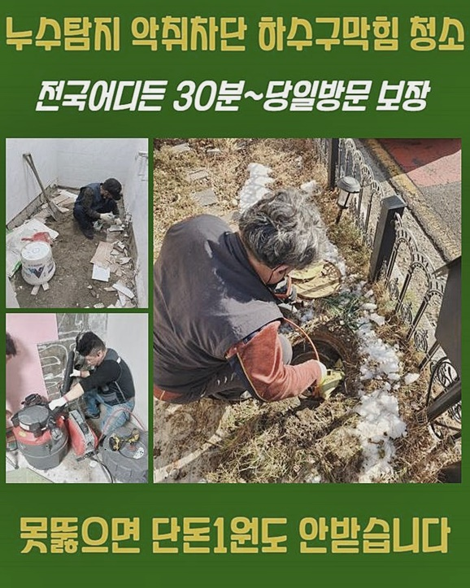
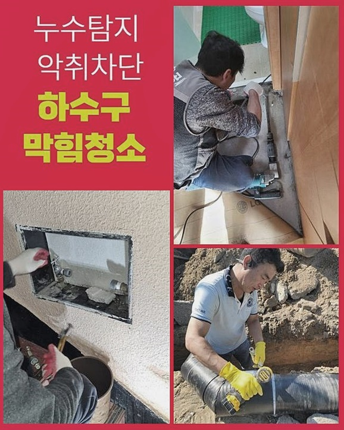
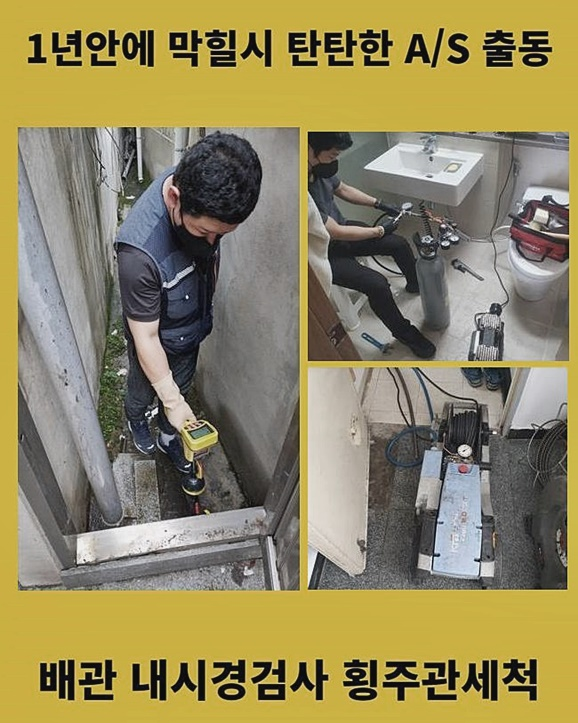
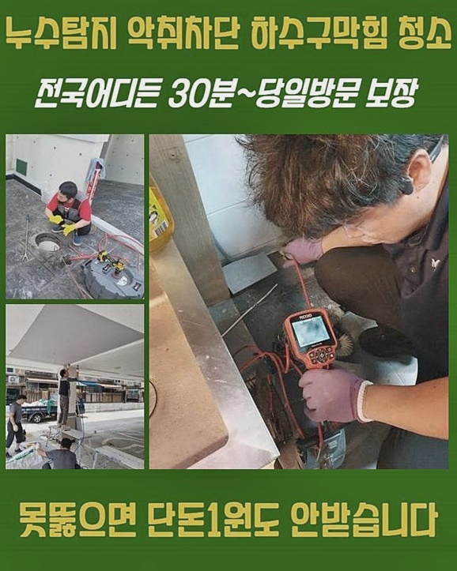
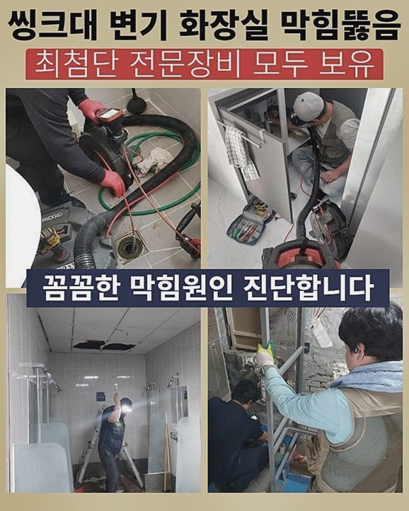
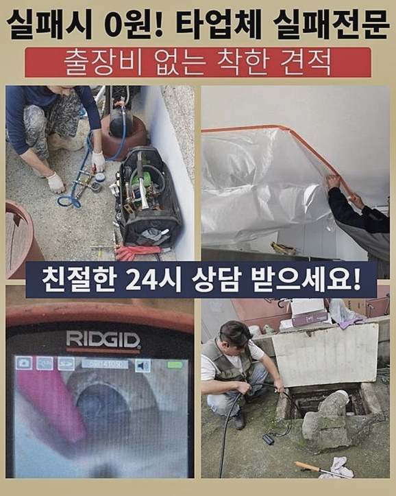
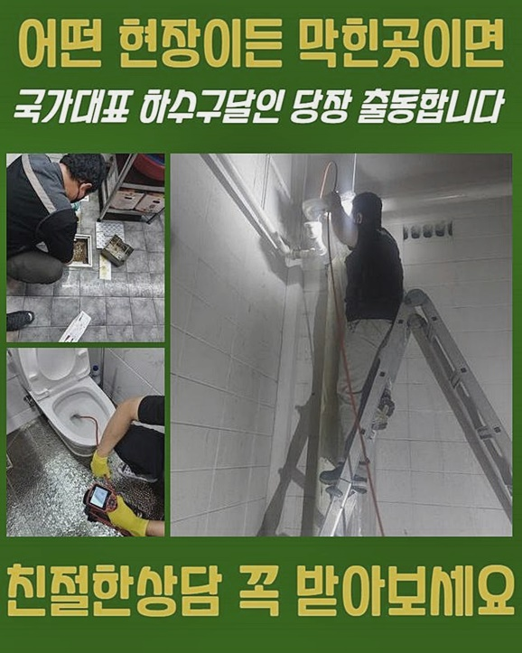

🏠 종로 교남동하수도뚫음 청진동 오수맨홀청소 누수탐지
용인 남동 하수구막힘 전문 시공 후기

📋 작업 개요
- 위치: 용인 남동, 남동, 용인
- 서비스 유형: 하수구막힘, 배관막힘, 맨홀막힘, 누수수리, 역류해결, 뚫는업체, 배관청소, 고압세척
- 작업 일시: 2024. 7. 22. 19:14
- 업체명: 하수구수사대 (010-5615-2118)
🔍 문제 상황
종로 교남동하수도뚫음 청진동 오수맨홀청소 누수탐지
역류들이 나타나게된다면 수도사용에 문제들이 커지게됩니다
집 뿐만이 아니고 외부적인 곳도 같아요
역류 시 가령 오수만 빠진다기보다는 내부에 쌓인 찌꺼끼와 냄새가 발생되기에 신속히 헤쳐나가야합니다
최근 방문드린 곳 또한 배수관로에서 역류해버린 탓에 저희께 전화를 주셨어요
도착한 뒤 하수관을 들여다보았죠
지하부분의 배수관에서 역류들이 시작된 상황으로 악취의 이슈도 생겨났습니다
외관으로는 내부 문제들을 못보아서 주변정리를 해줘야했죠
주변에 존재하는 잔해물은 걷어내고 펌프기기를 사용된뒤 물들을 제거시킵니다
그래야만 내시경으로 체크했을때 안쪽까지 깨끗히 보이는데요
내시경으로 안쪽을 주시하였더니 잔여물질들이 엉켜서 막혀버린 현상을 띄고있었죠
지금껏 꾸준히 관리된게 아니였기에 증세가 심상치않았죠
구간마다 잔해가 많았고 그동안에 빠져나간 기름의 잔재와 음식물등의 잔해로 문제들이 발생되게 된것인데요
이토록 다수가 쓰는 곳일 경우 정기적으로 관리하시는것이 좋겠죠
여러 사람이 쓸 땐 허용량이 많기에 꾸준히 잔여물질들이 침전될 가능성이 높은겁니다

🔎 원인 분석
💡 전문가 진단: 정밀 진단 장비를 사용하여 슬러지의 고착 여부를 판명하고 타격/세척 작업을 실시했습니다.
더군다나 슬러지의 경우 초반엔 점액질의 성분이나 퇴적되면서 성상들이 뒤바뀌게됩니다
단단히 변하며 일반적으로의 방식으론 해결에 닿기 힘들만큼 딱딱하게 변해요
이럴때에는 전문업체의 실력을 믿고 안정적으로 제거하는것이 옳죠
일반적으로 심층부로부터 잔여물질들이 쌓이게되죠
내시경장비를 배출된뒤 바닥부를 중점으로 두고 관찰했는데요
기름때가 고착되서 증세들을 초래한것을 확실하게 인지했습니다
오래도록 관리적 측면이 없었던 까닭에 딱딱해진 현상이 정상적이지 않았기에 설명을 드리고 고압수들을 사용해서 고객님의 고민을 해소시키고자 했는데요
관로의 특성을 살피고 대형 고압수들을 사용했어요
상당수 구경이 작은 경우 소형 강한 물줄기를 운용하는데 이와 달리 중앙배관과 연결된 배수관에서는 대형 고압노즐분사를 배출된뒤 이물제거를 진행시켜요
차와 이어진 고압세척기장비를 이용합니다
일반적으로 세척 진행 시 이용되는 수도를 끌어온 뒤 사용하는데 이럴때 이용되는 물은 보유를 해준다거나 부득이하게 주변 상가등에 도움들을 거쳐야 올바른 청소가 이행될 수 있어요
이럴때 배관의 문제들을 체크해주어야 하는데요
물리적인 압력으로 문제들을 시정하기에 적절한 압력으로 세척해주는게 1순위에요
더군다나 배관접촉지점에 강력한 수압을 가하면 손상을 입어 누수증상이 야기될 지 몰라요
그렇기에 내시경장비를 써서 배관의 문제들을 확인해주는게 중요한데요
잔여물이 누적된 위치를 목표로 설정해서 세척들을 진행했죠

🔧 작업 과정
높은 압력의 물들을 쏘기도 하지만 세척액체들과 고온이므로 고착된 잔여물질을 잘 제거해줍니다
잔해물을 중화시켜주어 원만하게 청소하도록 하는 까닭에 여러모로 순기능을 가지고있습니다
고압수방식의 방식으로 이물질들을 꼼꼼히 작업해주었죠
고압의 물줄기 분사가 이뤄지자 잔여물질들이 분해되며 통수불가했던 물들이 통수되는걸 보았는데요
걸러진 고착물은 별도로 옮긴 뒤 마무리까지 실시했어요
점검 결과 이쪽 스팟 이외 깊은부분에도 증세가 발발해 스케일링 과정이 필요했는데요
곳곳의 관로 내부에 이물을 체크했습니다
그리하여 샤프트를 흘러들어간뒤 잔해물을 청소해주었습니다
잔여물질들이 퇴적된 지점을 타겟한 다음 샤프트로 청소했는데
머리부분에 부착된 사슬부들이 회전하면서 고착물을 분쇄하죠
직접 이물들을 타격하여 분쇄시키니 고착물들이 탈락되면서 청결함을 되찾았어요
걸러진 잔여물질을 주시하니 점성이 있는 기름들이 상당했어요
이러한 탓에 물넘침이 야기되었어요
엘보라인에 누적된 이물도 신속히 스케일링하며 깨끗한 배관복구에 박차를 가했어요
이럴때 내시경도 투입해주어 놓친 부분은 있는지 관찰해줌과 동시에 장비를 이용합니다
내시경의 부재상태로 작업해줄 때에는 배수관에 오염물이 사라졌나 알 길이 없는데요
그러므로 하수구 작업에서 내시경기기는 절대적이죠
샤프트기를 사용하여 배관 하수관을 청소해주면 고착물들을 원만히 관리하게됩니다
잔여물이 지속적으로 쌓여버렸다면 전체적인 컨디션에 치명적인 결과를 자아내니 신경써주셔야 하겠죠?
이물제거를 실시하고서 내시경장비를 통해 내부 상황을 체크해보았죠
남은 잔여물이 존재하는지 확인합니다
일정한 통수속도가 갖춰져야 막혀버리는 문제들이 생겨나지 않아요
관로는 일정 배수속도를 확보하는게 큰 비중을 차지하므로 뚫는 작업 뒤에도 통수가 되는지 꼭 확인시켜드려요
뒤이어서 내시경장비로 확인해보았더니 잔여물질들이 청소된것까지 목격했죠
그다음 배수구로 하수들을 배출해주며 수월하게 흐르는지 확인했어요


✅ 작업 완료
이전모습이랑은 비교도 안될정도로 빠르게 내려가는 모습을 인지할 수 있었어요
이후에 통수결함을 맞딱들일 걱정은 없어요
정기적으로 이물제거를 해주셔야 하수관을 무리없이 이용할 수 있습니다
잔여물이 누적되어 잔존하면 오늘의 현장처럼 하수관이 역류되는 일이 일어나 안에서 증세를 맞닥뜨리게 합니다
주기성 띄는 검수와 이용할때 이물이 축적될 수 없게 주의해 주시는 사용되는데요
저희전문진들은 배관의 대한 전문지식으로 다양한 오류를 완화해드려요
도움들이 필요하시면 아무때나 문의주시기 바라요!




⚠️ 베란다 누수 및 방수 관리 방법
- ✅ 비가 많이 올 때 창틀 주변이나 아래층 천장에 얼룩이 생기는지 정기적으로 확인해 보세요.
- ✅ 우수관 주변 실리콘 마감이 들뜨거나 깨진 틈새가 있는지 손상 여부를 수시로 체크하세요.
- ✅ 베란다 바닥 타일의 줄눈(메지)이 소실되면 그 틈으로 물이 침투하여 누수가 유발됩니다.
- ✅ 누수 의심 증상 발견 시 방치하면 아래층 손실이 커지므로 즉시 전문가의 진단을 받으십시오.
💡 핵심 정리
- 확실한 장비 작업(내시경 점검 및 샤프트 스케일링)으로 원인을 뿌리 뽑습니다.
- 작업 후 1년 이내에 동일한 부위 재발 시 100% 무상 A/S 서비스를 보장합니다.
- 서울 · 경기 · 인천 전 지역에 24시간 언제든 긴급 출동할 수 있도록 항시 대기 중입니다.
❓ 자주 묻는 질문 (FAQ)
🚨 용인 남동 하수구막힘 문제로 고민이신가요?
정확한 원인 진단과 확실한 시공으로 재발 없는 해결을 약속드립니다.
24시간 긴급 출동 | 서울 · 경기 · 인천 전지역 | 1년 내 재발 시 무상 A/S